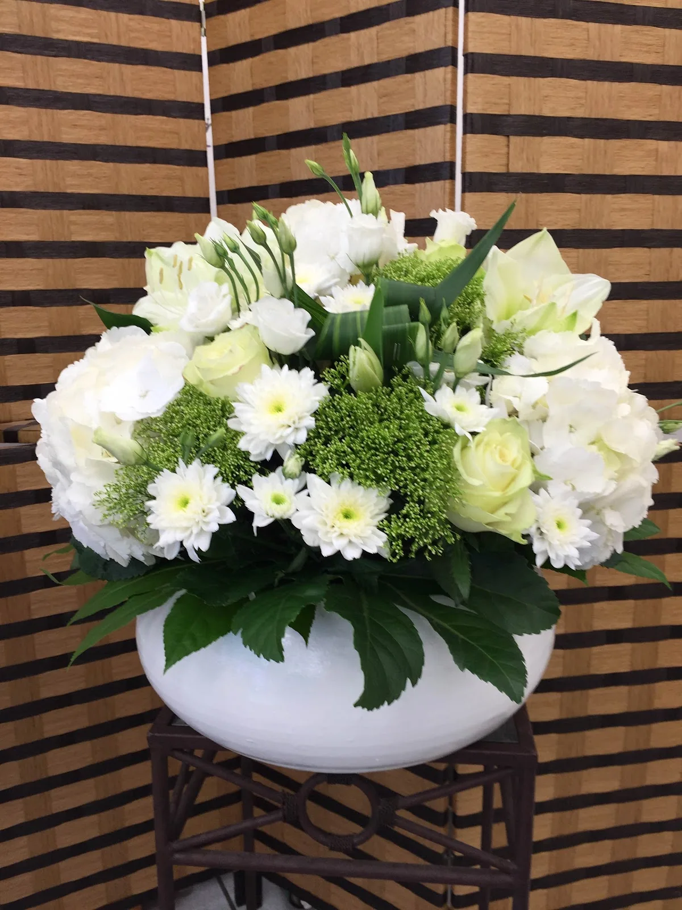
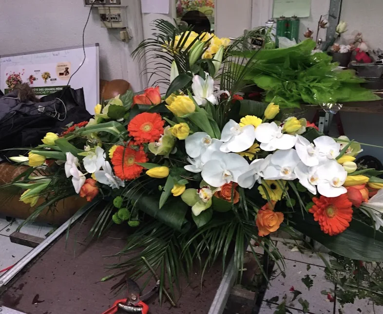
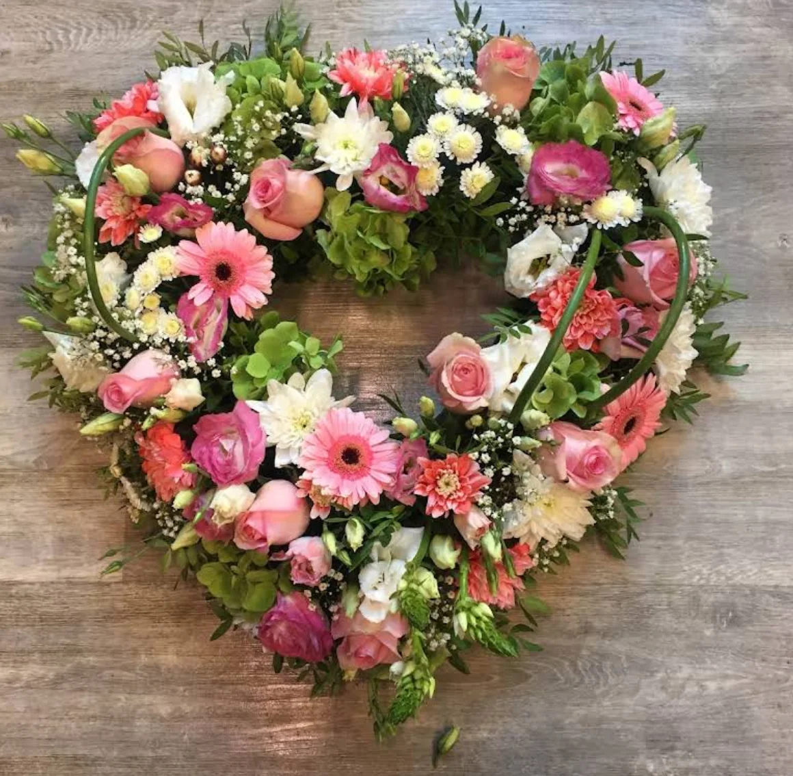
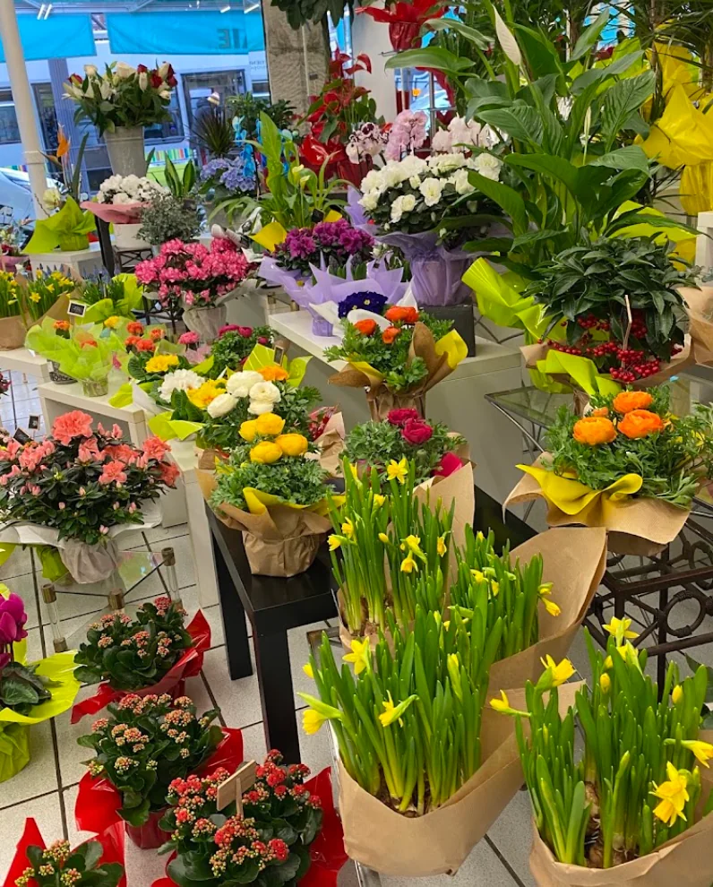
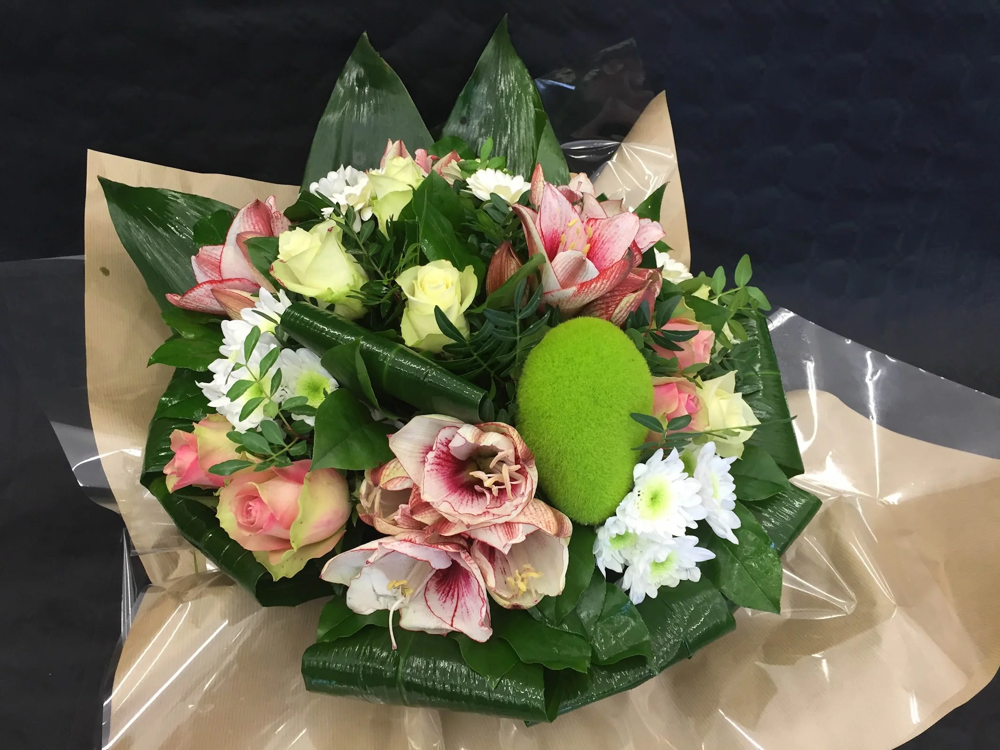
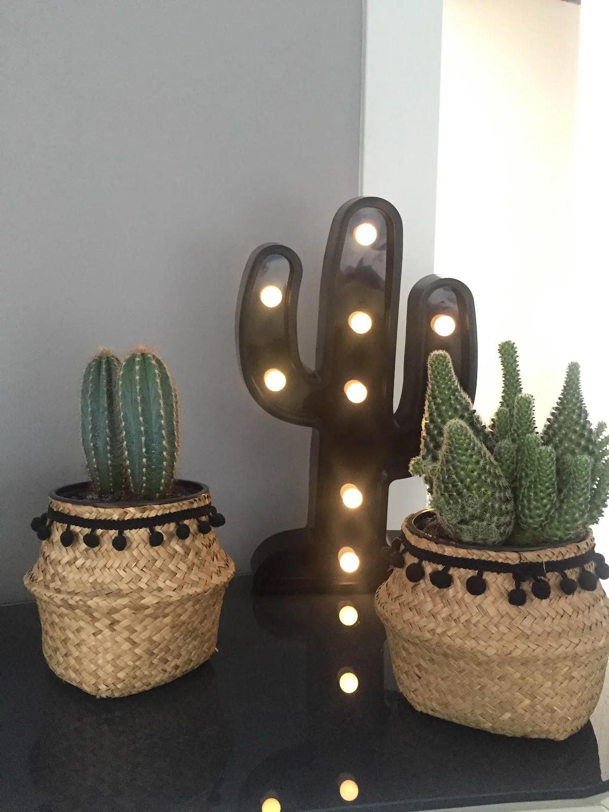
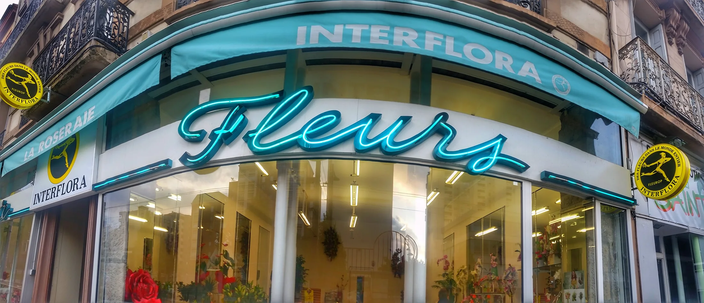

01
Bouquets & compositions
Des créations florales colorées pour un anniversaire, une attention, un remerciement ou le simple plaisir d’offrir.

Appeler ↗Fleuriste à Saint-Étienne · Rue des Docteurs Charcot
Bouquets généreux, compositions florales et plantes pour offrir, célébrer ou simplement faire plaisir.
95 avis Google
Une adresse appréciée à Saint-Étienne


À Saint-Étienne, La Roseraie accueille vos envies de fleurs au 60 rue des Docteurs Charcot. Les avis soulignent régulièrement la beauté des bouquets, l’écoute, les conseils et l’accueil en boutique.
Voir les créations →

Une envie précise ? Une couleur, une fleur ou une occasion particulière ? Le plus simple est d’appeler la boutique pour échanger selon les fleurs disponibles du moment.
Des créations florales colorées pour un anniversaire, une attention, un remerciement ou le simple plaisir d’offrir.

Appeler ↗Pour un bouquet de mariage ou une demande florale particulière, échangez directement avec la boutique sur vos envies, couleurs et fleurs souhaitées.
Plantes fleuries, feuillages et petites compositions pour apporter une touche végétale à un intérieur ou faire un cadeau durable.

Venir en boutique →Pour une cérémonie ou un hommage, contactez la boutique afin de préciser vos souhaits et de vérifier les possibilités selon les fleurs du moment.

Une adresse stéphanoise
Couleurs franches, fleurs délicates, plantes et compositions : faites défiler la galerie ou cliquez sur une image pour l’agrandir.
Une boutique incroyable il on réalisé le bouquet de mariage de mes rêves alors que plusieurs fleuriste me disait que je n’aurai jamais de pivoine pour 27 juin en raison de la canicule et bien eux l’ont fait l’équipe a l’écoute et bienveillante merci mille fois
La fleuriste est non seulement talentueuse et passionnée, mais aussi très sympathique, même au téléphone. Les bouquets sont toujours magnifiques, avec des fleurs fraîches et harmonieuses. Accueil chaleureux, conseils avisés et service irréprochable. Je recommande vivement !
Mon mari m’à offert un magnifique bouquet de fleur de cette boutique pour mon anniversaire le 15 juillet, nous sommes aujourd'hui le 25 juillet et le bouquet est toujours jolie, certes certaines fleurs fatiguent mais il reste vraiment présentable c’est un record pour moi ! Je change l’eau tout les 2 jours et j’y ajoute une pincé de sucre mais je pense que la qualité des fleurs de base y est pour beaucoup ! Merci encore pour ce cadeau d’anniversaire qui aura duré dans le temps et qui étais juste sublime je n’hésiterais pas à passer pour mes prochains achats de fleurs
Je vous met les photos du bouquet le jour de l’achat (les deux premieres) et aujourd'hui (la dernière) !
Tout est parfait comme le signalent la plupart des avis. Mais il est dommage que le service Interflora reste décevant. Il y souvent quelques différences entre les choix de couleurs sur le site Internet n´existent pas en magasin, les dimensions sont approximatives, etc. Ce décalage peut etre problématique surtout quand il s´agit de cérémonies telles que des funérailles ou un mariage. Pour remédier à ce defaut, il faudrait que le site ait un choix plus limité et que les fleuristes prennent plus en compte les offres du site, afin d´etre plus en accord, selon les saisons et les circonstances des commandes par Internet.Ceux qui offrent risquent d´etre déçus. Merci.
J’ai acheté ce bouquet pour mon anniversaire de mariage avec ma femme, le 7 juillet 2026 il y avait 12 magnifiques roses Au bout de 2 jours la moitié sont complètement morte à plus de 45 e le bouquet je suis. Très déçu Et en plus le bouquet est gardé dans un endroit climatisé donc ne souffre même pas de la chaleur, je n’y retournerai pas, je pense
Pour une demande très précise, la disponibilité des fleurs peut varier selon la saison : un appel reste le moyen le plus simple de vérifier.
04 77 57 38 03 ↗La boutique se situe au 60 Rue des Docteurs Charcot, 42100 Saint-Étienne. Le bouton « Itinéraire » du site ouvre directement Google Maps vers cette adresse.
La Roseraie est ouverte du lundi au samedi de 8h00 à 19h30, et le dimanche de 8h00 à 15h00.
Oui, les avis clients mentionnent notamment la réalisation de bouquets de mariage. Pour une fleur, une couleur ou une date précise, appelez la boutique afin d’échanger sur vos envies et les possibilités du moment.
Les photos présentent des bouquets et compositions de styles variés. Pour une création adaptée à une occasion particulière, contactez directement la boutique et précisez vos préférences.
Oui. La boutique est ouverte le dimanche de 8h00 à 15h00, pratique pour un bouquet ou une attention de dernière minute.
De manière générale, recoupez légèrement les tiges, utilisez un vase propre, renouvelez régulièrement l’eau et évitez une exposition directe au soleil ou à une source de chaleur. Pour un bouquet spécifique, demandez conseil lors de votre passage en boutique.
Rue des Docteurs Charcot
Saint-Étienne